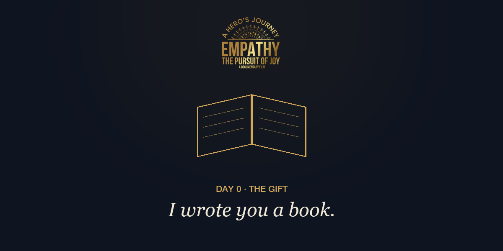
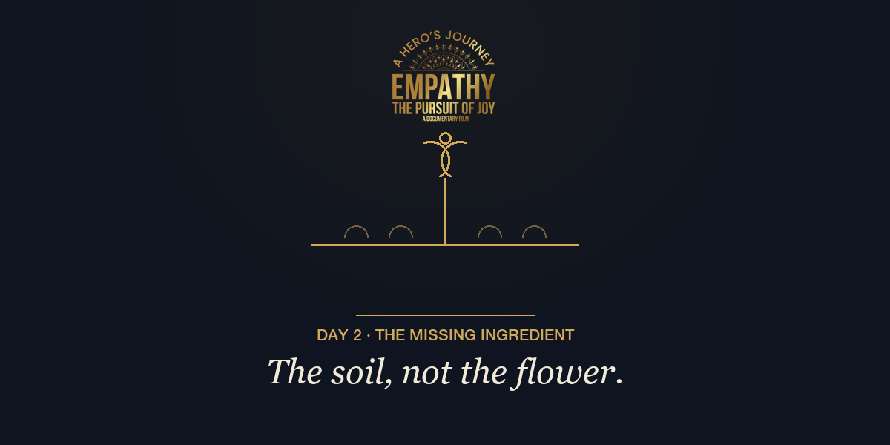
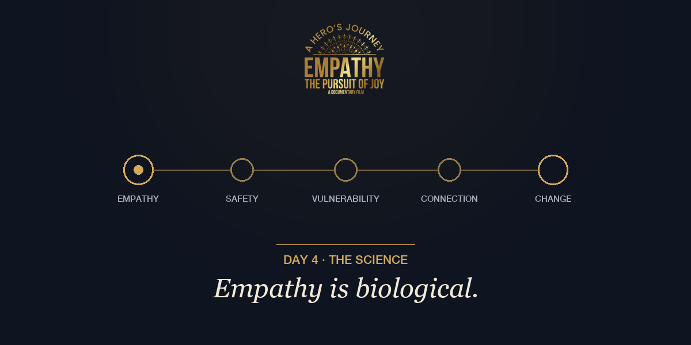
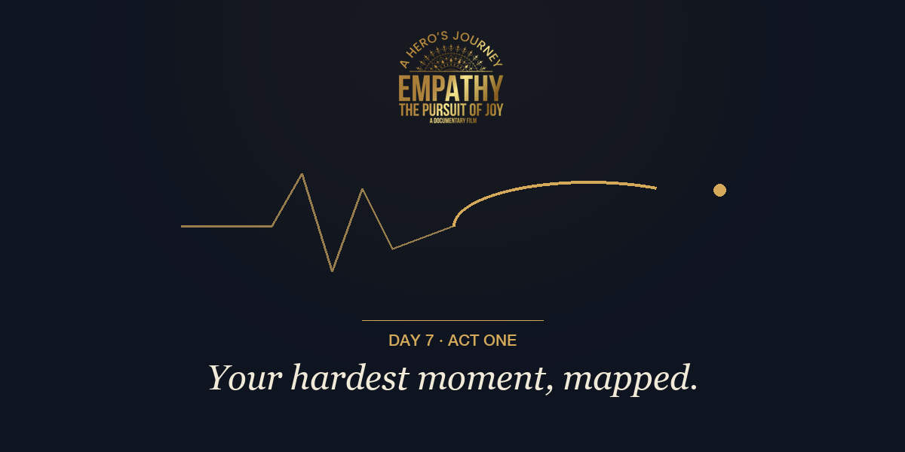
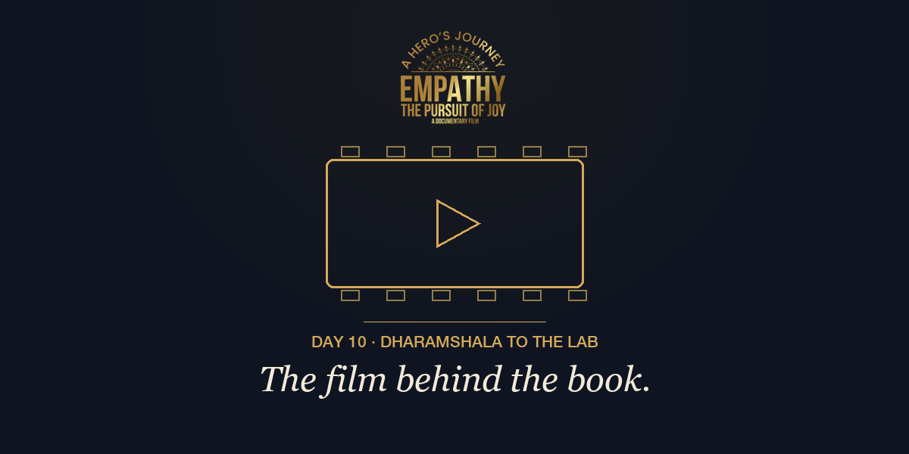
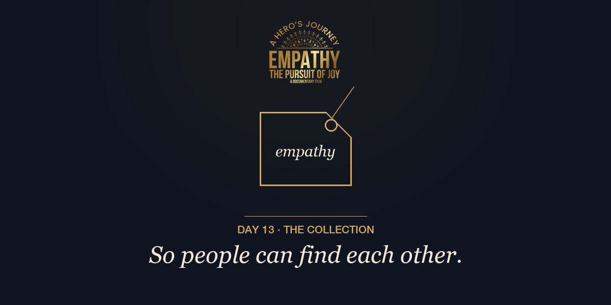
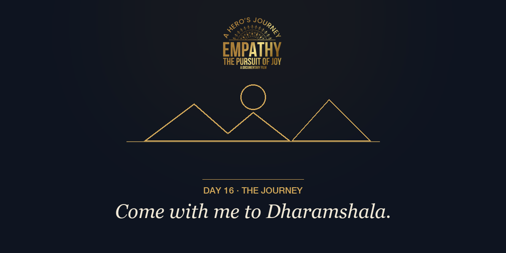

Day 0 · The Gift
Goal: Deliver value immediately — no ask at all. Re-open the relationship with a gift.
| Subject A | I wrote you a book (it's free, and it's yours) |
| Subject B | The missing ingredient — my new book, free for you |
| Preview text | Everything I've learned in Dharamshala and the lab, in one short book. |

You've been part of this journey with me — so you get this before anyone else.
I've spent the last years studying with teachers in the Dalai Lama's inner circle, and with the neuroscientists who measure what those practices actually do to a brain. I kept circling one question: why do the best healing frameworks in the world so often… not work?
The answer became a book. It's called The Fifth Element, and I'm giving it away — because its whole argument is that healing spreads person to person.
It takes about twenty minutes to read. Chapter Three alone may change how you talk to yourself.
P.S. — If it moves something in you, forward this to one person who needs it. That's the entire business model of empathy.
With empathy,
Natalie
Executive Producer · Empathy: The Pursuit of Joy
Day 2 · The Missing Ingredient
Goal: The core reframe. Pull non-openers back to the book.
| Subject A | Why “just be compassionate” never worked for you |
| Subject B | The soil, not the flower |
| Preview text | You weren't failing at compassion. You were missing its prerequisite. |

In Tibetan culture, compassion is assumed — it's the flower everyone is growing toward.
But most of us in the West weren't raised in compassion. We were raised in self-criticism, performance, and comparison. So when someone says "just be compassionate," what we hear is: be nicer, try harder, ignore your own pain. One more standard to fail.
Here's the discovery at the center of my work: empathy is the soil the flower needs. You cannot grow compassion in the soil of self-attack.
Self-empathy starts with one sentence: "My pain makes sense. My reactions make sense." Try saying it once today — actually saying it. Notice what your body does.
With empathy,
Natalie
Executive Producer · Empathy: The Pursuit of Joy
Day 4 · The Biology
Goal: Credibility: the science spine. Empathy for the skeptics.
| Subject A | Empathy isn't emotional. It's biological. |
| Subject B | The molecule that decides whether you can change |
| Preview text | Oxytocin, shame, and the chain your brain needs before anything can shift. |

When you feel empathy — receive it or give it — your brain releases oxytocin. Not a metaphor. A molecule.
And it sits at the start of a chain with no skippable steps: empathy → safety → vulnerability → connection → change.
Without it, we defend our point of view like survival — because to a nervous system without safety, being wrong feels like dying. That's why arguments don't change minds and why shame never made anyone better.
Vulnerability is how a person moves from shame chemistry to connection chemistry. But vulnerability requires safety — and safety cannot happen without empathy. It always starts there.
With empathy,
Natalie
Executive Producer · Empathy: The Pursuit of Joy
Day 7 · Your Hardest Moment
Goal: The emotional center of the sequence. Story email.
| Subject A | What your brain is doing in your worst moment |
| Subject B | Act One always feels like the end. It never is. |
| Preview text | Loss, conflict, diagnosis, betrayal — the chemistry of the jolt, and the way through. |

Every transformation starts the same way: something jolts the system. A loss. A conflict. A diagnosis. A betrayal.
In that moment your amygdala fires, stress chemistry surges, and your nervous system locks into fight, flight, freeze, or fawn — before you've had a single conscious thought. Advice can't reach you there. Even good ideas feel like accusations.
Empathy doesn't erase that chemistry. It does something more precise: it softens it just enough. One pulse of "of course you feel this way" — from someone else, or from you to you — is often the difference between spinning for years and beginning the journey.
The wound doesn't have to close today. It only has to become face-able. That's all Act One needs.
With empathy,
Natalie
Executive Producer · Empathy: The Pursuit of Joy
Day 10 · The Film
Goal: Pivot from the ideas to the project. Community CTA.
| Subject A | Why I'm making this film with the Dalai Lama's inner circle |
| Subject B | From the monasteries to the lab — the film behind the book |
| Preview text | Therapeutic entertainment: a felt experience, tuned and validated by science. |

Everything I've sent you these two weeks comes from one project: Empathy — The Pursuit of Joy, a feature documentary we're filming with teachers in the Dalai Lama's inner circle in Dharamshala, India.
Alongside them: the neuroscientists, music-medicine researchers, and contemplative scientists who measure what these practices do — so the film isn't a message, it's a felt experience, tuned and validated by science. We call it therapeutic entertainment.
The community around this film is where everything happens first — the science, the music, the behind-the-scenes, the early screenings.
I'd love you inside it.
With empathy,
Natalie
Executive Producer · Empathy: The Pursuit of Joy
Day 13 · Wear the Evidence
Goal: The merch door. Soft open; builds the wearables list.
| Subject A | So people can find each other |
| Subject B | The Empathy collection is almost here |
| Preview text | Caps, tees, sweatshirts — and something special, made in small batches by hand. |

A strange, wonderful thing happens when someone wears an idea: the right people start finding them.
That's the whole reason the Empathy collection exists — caps, tees, and sweatshirts carrying the mark, so the people carrying this idea can recognize each other. Every piece funds the film and the research.
And there's one piece I'm especially excited about: the Empathy shawl — made by hand, in small batches, echoing the blessed scarves of Dharamshala. When they're gone, they're gone until the next batch.
The collection opens to the community list first.
With empathy,
Natalie
Executive Producer · Empathy: The Pursuit of Joy
Day 16 · The Call
Goal: The summit offer: the Dharamshala journey. Close the arc.
| Subject A | Come with me to Dharamshala |
| Subject B | A blessing from His Holiness — and a week that changes people |
| Preview text | The monasteries, the music, the culture this film grew from. A few places, once a year. |

Once a year, I bring a small group to the source.
A week in Dharamshala — the monasteries, the nunneries, the music institute, the mountain paths, the culture this whole project grew from. We eat together, sit with the teachers, and yes: the group receives a blessing from His Holiness the Dalai Lama.
People arrive as travelers. They leave different. I've watched it happen every single time, and it is why I keep going back.
The journey has a few tiers, including one that makes you an associate producer of the film. Places are genuinely limited — it's a small group on purpose.
If the book moved something in you, this is its full-volume version.
P.S. — Every hero's journey starts with the same question. Will you answer the call?
With empathy,
Natalie
Executive Producer · Empathy: The Pursuit of Joy